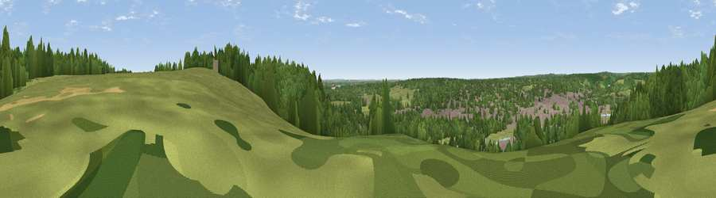

Viewpoint near Henley-on-Thames
#41493 in England · top 53% of its area beats it · near Henley-on-ThamesWhere it is
The exact computed spot (SU 75525 83925). Click the marker for map links.
The view, rendered

A 360° render of this exact spot computed from the terrain model, tree cover and land cover — summer colours, afternoon light, calibrated against photographs of famous viewpoints. Real trees, hedges and buildings will differ in detail.
The panorama
Grey silhouette: terrain skyline in each direction (720 bearings, Earth curvature and refraction included). Dashed green: skyline with trees (+15 m) and buildings (+8 m) as obstacles. Blue strip: how far the ground is visible on each bearing.
Where the view opens
Wedge length = distance to the farthest visible ground on that bearing (vegetation-aware). Rings at 10, 25 and 50 km.
What fills the view
54% woodland · 35% grassland · 8% built-up · 2% cropland ·
Angular shares of the visible panorama (visual magnitude), not map area. Landscape diversity 0.45 (0–1 Shannon).
Key numbers
More beautiful places nearby
The staircase of upgrades: each row has a higher view potential than everything closer. Driving times are estimates from straight-line distance, calibrated against real road routing — check an actual route before setting out.
| Place | Direction | Drive | Score |
|---|---|---|---|
| Viewpoint near Hambleden | NE · 3 km | ~8 min | 32.4 |
| Viewpoint near Fawley | NNW · 3 km | ~8 min | 39.3 |
| Viewpoint near Fawley | NNW · 5 km | ~10 min | 48.8 |
| Viewpoint near Cookley Green | NW · 10 km | ~20 min | 68.5 |
| Viewpoint near Watlington | NNW · 11 km | ~21 min | 70.6 |
| Viewpoint near Lewknor | NNW · 12 km | ~23 min | 70.8 |
| Viewpoint near Lewknor | N · 14 km | ~25 min | 74.4 |
| Coombe Hill Monument | NNE · 25 km | ~40 min | 75.5 |
51.54917, -0.91218 · source: screening · position refined by local search. Computed location — check access rights before visiting.